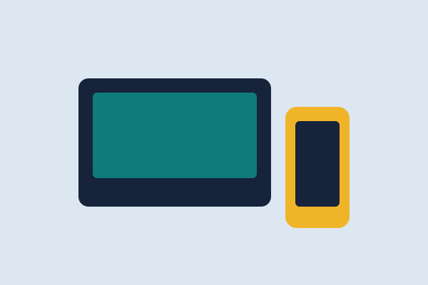

Setting up a MERN project without the clutter
A simple folder layout for client and server code that keeps routes, models and components easy to find.
Lessons from my projects, written in plain language.
A simple folder layout for client and server code that keeps routes, models and components easy to find.
Three properties I use every day to align, space and wrap content without fighting the browser.
Escaping output, validating input and other small steps that block common cross-site scripting bugs.

Why starting with the smallest screen makes the desktop layout simpler and the CSS shorter.